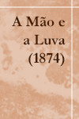
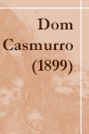
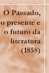
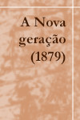

Romance
A Mão e a Luva (1874)
A namorada de Estevão, — é tempo de dizer alguma coisa dela, — era uma moça de 17 anos, e, por ora, simples aluna-professora no colégio de uma tia do nosso estudante, à Rua dos Inválidos. Estevão tinha-a visto, pela primeira vez, seis meses antes, e desde logo sentiu-se preso por ela, "até à morte", disse ele ao amigo, referindo-lhe o encontro, o que o fez sorrir de tão estirado prazo. Qualquer que ele fosse, porém, o prazo fatal daquele cativeiro, a verdade é que Estevão no mesmo ponto em que a viu logo a amou, como se ama pela primeira vez na vida — amor um pouco estouvado e cego, mas sincero e puro. Amava-o ela? Estevão dizia que sim, e devia crê-lo; alguns olhares ternos, meia dúzia de apertos de mão significativos, embora a largos intervalos, davam a entender que o coração de Guiomar — chamava-se Guiomar — não era surdo à paixão do acadêmico. Mas, fora disso, nada mais, ou pouco mais.
Dom Casmurro (1899)
Retórica dos namorados, dá-me uma comparação exata e poética para dizer o que foram aqueles olhos de Capitu. Não me acode imagem capaz de dizer, sem quebra da dignidade do estilo, o que eles foram e me fizeram. Olhos de ressaca? Vá, de ressaca. É o que me dá idéia daquela feição nova. Traziam não sei que fluido misterioso e enérgico, uma força que arrastava para dentro, como a vaga que se retira da praia, nos dias de ressaca. Para não ser arrastado, agarrei-me às outras partes vizinhas, às orelhas, aos braços, aos cabelos espalhados pelos ombros, mas tão depressa buscava as pupilas, a onda que saía delas vinha crescendo, cava e escura, ameaçando envolver-me, puxar-me e tragar-me.
Crítica
O Passado, o presente e o futuro da literatura (1858)
O país emancipou-se. A Europa contemplou de longe esta regeneração política, esta transição súbita da servidão para a liberdade, operada pela vontade de um príncipe e de meia dúzia de homens eminentemente patriotas. Foi uma honrosa conquista que nos deve encher de glória e de orgulho; e é mais que tudo uma eloqüente resposta às interrogações pedantescas de meia dúzia de céticos da época: o que somos nós?
A Nova geração (1879)
Há entre nós uma nova geração poética, geração viçosa e galharda, e, cheia de fervor e convicção. Mas haverá também uma poesia nova, uma tentativa, ao menos? Fora absurdo negá-lo; há uma tentativa de poesia nova, — uma expressão incompleta, difusa, transitiva, alguma coisa que, se ainda não é o futuro, não é já o passado. Nem tudo é ouro nessa produção recente; e o mesmo ouro nem sempre se revela de bom quilate; não há um fôlego igual e constante; mas o essencial é que um espírito novo parece animar a geração que alvorece, o essencial é que esta geração não se quer dar ao trabalho de prolongar o ocaso de um dia que verdadeiramente acabou.